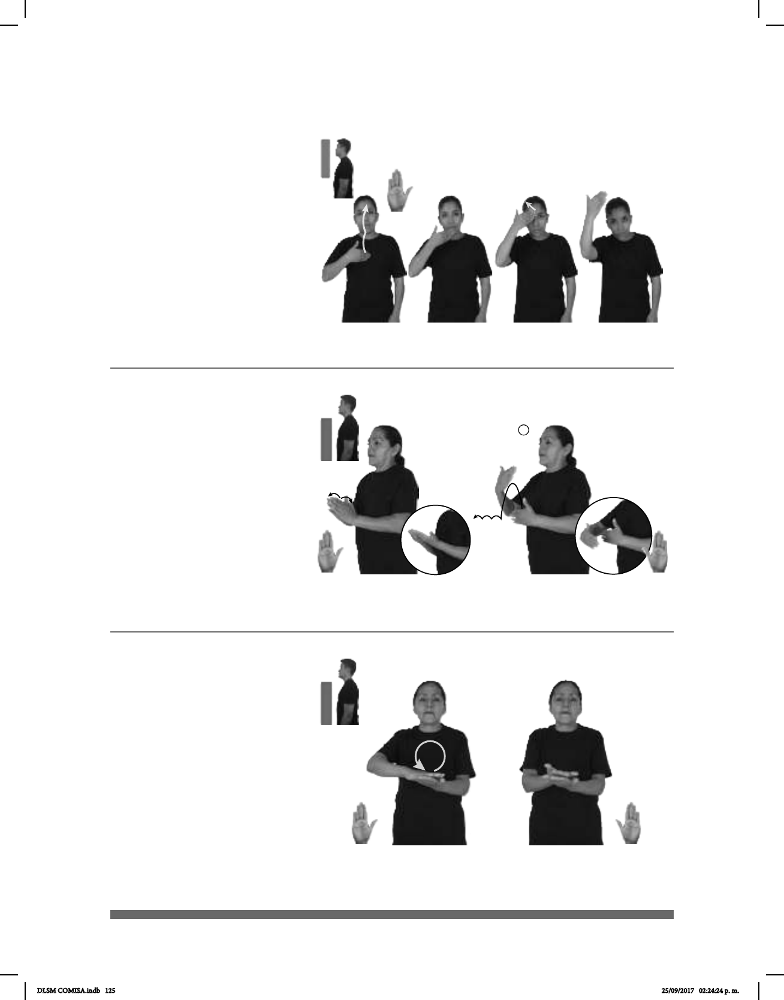

125
Árabe (B-P 43)
dm-JUANA pos-SU AMIGO ÁRABE
El amigo de Juana es árabe.
Seña: SM
B-P.2
Palma hacia adentro.
Seña que pasa por el
pecho, la barbilla, la frente y arriba
de la cabeza.
La mano simula
saltos hacia arriba.
Cabeza y
cuerpo adelantados.
adj. Natural de Arabia,
región de Asia.
1
2
(B-P 44)
Asar (B-P 45)
dm-ROSALÍA TRABAJAR ARCHIVO HOSPITAL
allá
Rosalía trabaja en el archivo del hospital.
dm-JAZMÍN
derecha
, dm-ROCÍO
izquierda
pro-DOS-DE-ELLOS ASAR POLLO
Jazmín y Rocío asaron el pollo.
Seña: SC: I. SS; II. SB
I. y II. B-P.2
I. Las palmas inician
frente a frente y terminan hacia arriba;
II. MD y MB palmas hacia adentro.
I. y II. A la altura del pecho.
I. Las manos parten de un
mismo punto y luego se abren hacia los
lados; II. La MD simula dar saltos hacia
enfrente.
Simula la acción de
archivar documentos.
sust. m. Lugar
donde se guardan documentos en forma
ordenada, y conjunto de estos
documentos.
Seña: SB
MD y MB B-P.2
MD la palma inicia hacia
abajo y termina hacia arriba. MB palma
hacia arriba.
A la altura del pecho. MD
sobre MB
MD la muñeca gira y
cambia la orientación de la palma.
Simula la acción de asar
algo.
v. tr. Preparar algún alimen-
to, como carne o verduras, poniéndolo
directamente al fuego o sobre una parrilla,
comal, etc., con muy poca grasa o sin ella.
DLSM COMISA.indb 125 25/09/2017 02:24:24 p. m.